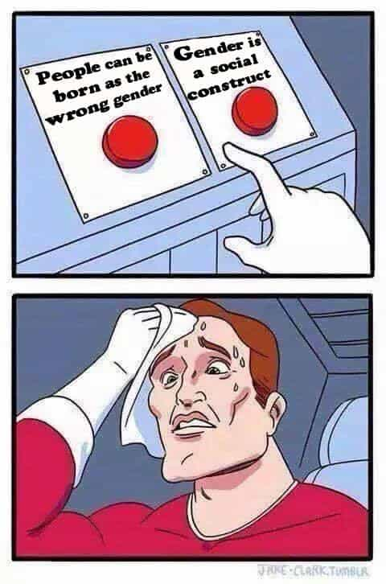

< < < Back
There Are Only Two Sexes: Male And Female – Return Of Kings
The biological principle of sexual dimorphism means that there are two differing forms for males and females. This is a characteristic of advanced species, including humans. It’s a lot more than the feathers of a peacock or a lion’s mane; these are far-reaching genetically-encoded differences. This contradicts the classical liberal “blank slate” idea and the modern liberal “social construct” argument that includes dozens of possible gender identifications.
Men evolved to be hunters and warriors; women evolved to be gatherers and nurturers of children. This has profound effects even for today’s society. The weight of hundreds of thousands of years of evolution won’t disappear by wishing it away. There are many differences, but I’ll describe a few important ones.
Body type
First of all, men tend to be half a foot taller than women. Yes, statistical outliers do exist, such as six foot tall women and 5’6″ tall men. I will be discussing averages, including this. I point this out because those who argue against human differences will muddy the waters by citing exceptions, but outliers don’t invalidate the general average.
Other than that, men tend to be stronger than women, most pronounced with upper body strength. It makes sense that men should be adapted for greater physical strength, since we were the hunters and warriors for ages. Just as estrogen makes breasts grow, testosterone helps muscles grow. That’s why anabolic steroids work. This is why there are different sports teams and Olympic events for women. It’s not unheard of for trannies to get into women’s sports, where they have an unfair advantage; the officials haven’t taken the politically incorrect move of calling bullshit on that.
Overall, male aesthetics are linear and female aesthetics are curvy. The fat distribution patterns are different; a chubby guy will have a big gut, and a chubby woman will have a big butt, breasts and thighs. I don’t mind voluptuous women, but a woman with a male fat distribution pattern looks a bit strange. That tends to be associated with metabolic syndrome and PCOS, which is why it’s hard-wired as a turn-off.
There are even some remarkably obtuse feminists who say that these physical characteristics are only a social construct, and the reason these differences exist is because boys and girls are fed differently. In the real world, one meal is cooked for the entire family, and everyone eats what they want. People raid the refrigerator at will. Do girls today really look underfed?
This sexual dimorphism is reflected in the first two elements of the “666 formula” in personal ads by many women. This is “Must be six feet tall, must have six-pack abdominals, must have a six-figure income”, usually beginning a long laundry list of desired characteristics. The few guys qualifying don’t have to look for personals on Craigslist, but all that’s another story.
Psychological differences
The Rationalization Hamster generating an excuse
Psychology is a much fuzzier science than biology, but differences here can be observed too. In many ways, men and women are remarkably alike. (Dysfunctional female behavior doesn’t happen because women are bad, but because today’s screwed-up society encourages it.) Still, in many other ways it seems as if we’re from different planets. In context, though, there’s an internal consistency to some of it.
For one example, women tend to think men are too obsessed with sports, while men don’t understand why women consider shopping fun. Granted, becoming too emotionally attached to games is irrational, and two hours of shouting at the TV while guzzling chips and beer makes you a couch potato. Still, as natural warriors, this sort of toned-down combat appeals to us. As natural gatherers, women instinctively provision for future needs. Rather than looking for berries and digging for edible roots, today’s endless abundance provides supermarkets and malls. All that’s fine and dandy until it takes a crowbar to get another blouse into the closet.
Women are pretty good at detecting social cues, which involves determining what people are feeling. This is a valuable skill for caring for very young children who can’t talk. Unfortunately, it makes them believe that guys should be telepathic—“I shouldn’t have to explain why I’m upset!” and all that.
Women tend to be more compassionate; that’s also valuable to mothers. However, that’s not so valuable to a hunter or warrior who might decide not to shoot an innocent animal or might spare a dangerous foe. Note that I’m speaking of women in a natural and healthy environment. In today’s conditions corrupted by decades of feminism, compassion in women is at an all-time low.
Other than that, men tend to be more practical. I’ve observed this myself time and again. Part of this is from laxity in current social standards; past generations were far more practical. However, even today, a guy wouldn’t be able to get much mileage by acting like a damsel in distress.
It’s a broad generalization that men are more logical and women are more emotional. There seems to be a biological basis for this stereotype. Maybe one of these days, brain scans will discover the Rationalization Hamster.
Natural sex roles and careers

Lunch break hundreds of feet above ground
The truth is that men and women are naturally suited to different jobs. This is why you don’t see too many women in coal mines, drilling rigs, and construction sites. Modern technology eases labor somewhat, but it can never do so completely.
Males are more interested in technology. It goes all the way back to day one. In baby studies, both boys and girls pay attention to faces, but boys pay attention to objects too. In the end, this is one reason why guys are more interested in science and technology. There are exceptions, of course, but programs to get more women into STEM fields won’t do much because few are interested in nerdy stuff.
In the past, women did the spinning and weaving and clothing production. Most cultures in the world had beautiful peasant dresses for the women and traditional costume for the men. Mechanization is more labor-efficient, and during the Industrial Age, women became the garment workers, but were no longer the designers. International standards then were set in Paris every year. Now that gay guys took over the fashion industry, the results aren’t an improvement. Needlework is a dying art. In the past, old clothes would be repaired, re-purposed, cut up for quilts, or used as rags. Today, clothing is disposable, which is rather inefficient.
Combat is best suited for men, notwithstanding the semi-legendary amazons. Today, many “grrrl power” movies show waifs defeating several larger opponents, but that’s just not how it works in the real world. Even martial arts skills (which most people don’t have) only get you so far. This does today’s women a grave disservice by giving them unrealistic expectations. The Antifag activist who boasted that she would take “100 Nazi scalps” discovered reality within seconds. Lowering military standards for political correctness is obviously a very bad move.
On that note, it certainly is right for a woman to defend herself and her children to her utmost ability whenever in danger. However, it’s irrational for anyone to be overconfident and take careless risks. Unfortunately, militant forms of feminism promote aggressive confrontation, as seen with specimens like Big Red. Does a rational man start cursing in another man’s face? He doesn’t, because that’s a good way to get into a senseless fight, resulting in potential injury and legal consequences. Guys never act like that unless they’re drunk or stupid.
Are there some things that women are better at than men? Absolutely! To mention a couple of obvious ones, men are absolutely no good at bearing children or breastfeeding them. We couldn’t do that if our lives depended on it. (We do help get things started, of course.) The ability to create life could be considered a delegated divine power. It’s too bad that the feminists, as out of touch with their own feminine nature as they are, think so little of their unique ability.

All that being said, it’s not wrong for women to pursue careers, but family must come first. Future generations depend on it. Wasting their prime years on partying and pointless consumerism isn’t a good life plan.
In conclusion

Actually, quite a bit.
Men and women are just different. This isn’t a bad thing; in a healthy society, we complement each other. In fact, differences are a good thing. Although today’s leftists have an unnatural desire to make everyone the same (human differences scare the daylights out of them), a unisex world would be dreadfully boring.
Unfortunately, feminism tries to explain away sex differences, usually blaming it all on us. They’re all too often neurotic and unable to cope with reality, yet try to dictate terms to society. Since they’re unwilling to embrace their own femininity, they shouldn’t corrupt other women. It’s even more ridiculous when they try to tell men how to be men. The feminists and other would-be social engineers should just let it be.
Read More: The End Game Of Feminism And Cultural Marxism Is To Eliminate Sex Differences